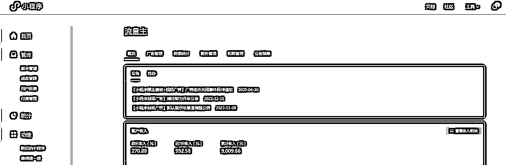
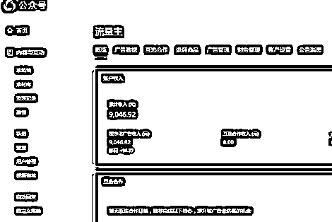
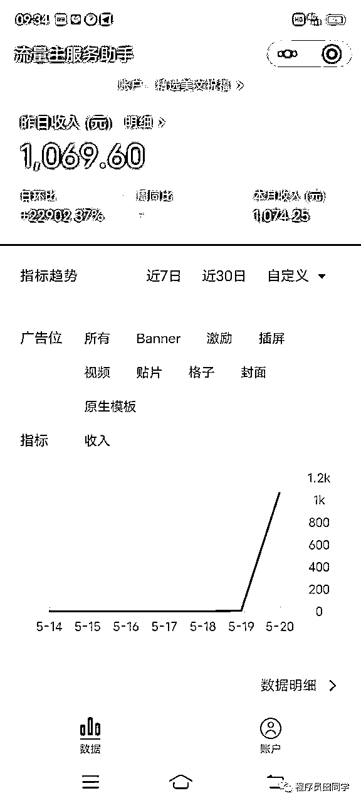
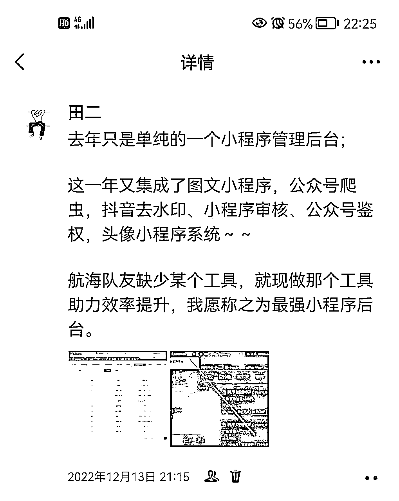
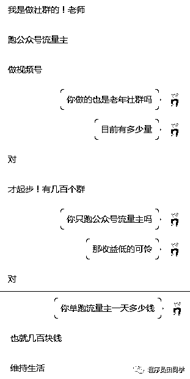
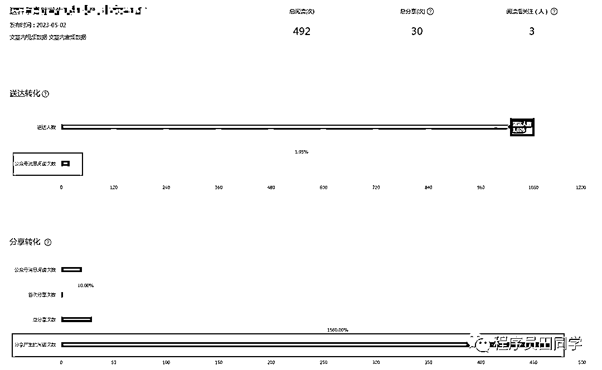
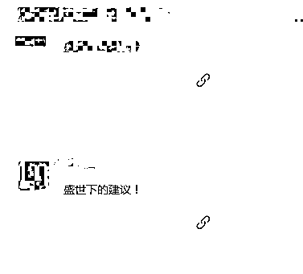
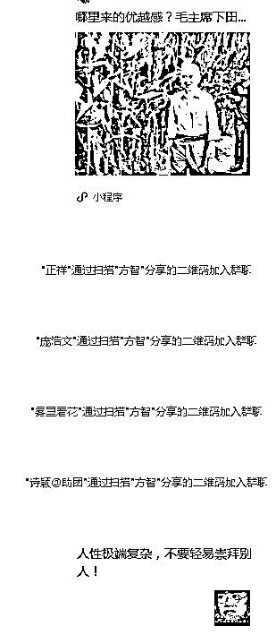
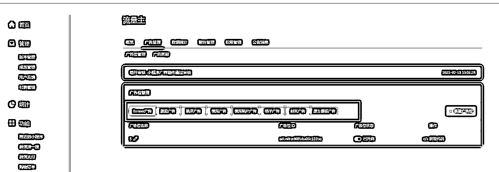
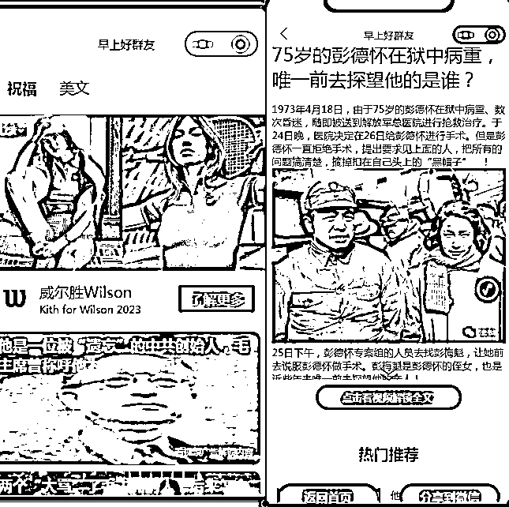

来源：https://q2srbwoeiz.feishu.cn/docx/N147dCBZJoN4sxxAprMcVZZHnWf
大家好，我是程序员田同学，一个在小程序行业沉淀了五年，在老年私域粉+公众号\小程序流量主赛道专研三年的玩家。
三年前，我大四实习工资一月3000，经过这几年的探索，现在在不影响我本职工作和个人IP业务的前提下，兼职运营数十个公众号和小程序。
下图是我今年二月上线的小程序，目前像这样在盈利的老年小程序有十二个。

下图是我今年新开的一个老年公众号的收益，这样的公众号目前有十五个。

这样的成绩在大佬云集的生财里可能不值一提，但它对于我这样的普通人来说，在当下的人生阶段还是挺满意的。
这篇文章就和大家详细分享一下——我是从何从迷茫的状态、再到找到赚钱方向、最后再到老年私域粉的引流和变现的具体玩法。
故事要从大四开始说起，我在抖音赛道上又又没赚到钱，陷入到无项目可做的境地，每天除了迷茫就是焦虑。
最后只好在闲鱼接一些外包单子来做，赚不到钱且无聊。
有天晚上有个大哥私信我，他有一个小程序想加一些广告，一个普普通通的老年图文小程序。
搞定以后，我多嘴问了一下大哥，你搞这个小程序是干哈的啊？
怎么也不会想到，当时随口一问居然让我找到了人生方向。
大哥随手扔给我几张图，那几张图我现在还保存着，放上来让大家感受一下我当时的震撼程度。
那年我大四，在郑州的一家公司实习，每月工资3000，他一天一个小程序的收入顶我半个月。

注：小程序名字不打码了，大哥改名了
那时候小程序虽然我已经搞了两年了，还从来没有见过这么多的收入。
幸好当时我情商还可以，我知道我这样的小白是没有资格和大哥成为朋友的，更没有资格说“带带弟弟”。
如果我冒然提出让大哥带我上车，「我还不能为大哥提供什么价值，想想就挺招人烦的」。
我知道最好的办法就是不打扰，等大哥再需要我的时候我再出现，向大哥展示我能提供的价值。
果然，几天后大哥又有新需求，我免费给大哥解决了所有问题。
又顺便指出他的系统存在的问题，花费了近一个月的时间，重写了大哥的整套小程序管理系统。
可能大哥觉得我技术还可以，也可能觉得我说话比较好听，慢慢的与大哥成为了朋友。
后来我成为了他的技术顾问，我也有机会揭开了大哥项目的面纱。
简单来说，就是建私域老年群，日常运营就是在群里推送公众号和小程序，赚流量主收益，而项目核心就在于流量从哪里来。（后面会着重分享）
在一次次的咨询中，我拼凑起了整个老年粉项目体系。
帮大哥重写的小程序管理系统，又经过我几十次的版本更新，有了我现在在用的芒果管理系统。

注：去年还特地发了一个朋友圈
虽然有十年运营大哥的加持，但没有老年粉圈子资源，「单打独斗永远也只是入门状态」。
去年机缘巧合之下，我认识了郑州的M总，一个老年粉项目的多年玩家。
他组了一个老年粉项目的小圈子，里面都是各个老年粉工作室的老板。
即便不发言，只潜伏在群里看大佬聊天，就积攒了相当多的经验。
在圈子里我认识了第一批大佬朋友，让老年粉项目迈入了第二个台阶。
时间来到2022年，我开始写公众号，写了很多关于小程序和公众号的内容，影响力在扩大，我认识的大佬也越来越多。
他们中有维护上千个老年群的大佬，也有十几个人的团队。
有日收益8k的大神，也有刚起步的小玩家。

注：与一个刚认识的同行朋友交流
我的优势在于会写代码，又是老年粉项目的圈内人，在老年粉领域的经验和人脉丰富，正是这些一点点的优势构筑了我的老年粉项目大厦的基石。
为什么这么多大佬选择老年粉呢？
老年粉有一个很大的缺点，但同时也是老年粉最大的一个优势——手机操作不熟悉，
因为操作不熟练，导致触发广告的概率非常高。
做过公众号的朋友大概知道，不点击的情况下，公众号的广告单价（ecpm千次曝光收益）非常的低，并且是越来越低。
一个平均3000阅读的公众号，每天底部广告流量主收益也就20块钱。
而老年粉公众号的流量主收入一般能达到正常公众号的五倍以上。
优势之二，老年人转发文章频次非常高。
看一下我的一个老年粉公众号，通过公众号推送的文章阅读只有20，但通过分享产生的阅读次数达到470。

基于老年粉爱转发的特点，只要我们筛选出优质的文章和视频，通过自身的裂变，粉丝就能获得不错的增长。
私域老年粉丝主要是放在群中，不放在公众号主要有两个原因。
①老年粉找不到订阅号的入口
②公众号存在变数太多，最近这段时间公众号的推送机制变化非常大，公众号离头条号越来越近，只有将粉屯在私域群中才是最长久稳定的。
「十年后公众号可能彻底沦为三流平台，但只要微信还是国民软件，粉丝数据就还在，基础的收益就能保证」。
去年我做了几万老年粉，今年我几乎没有做过任何引流动作，但我的收入依然保持着去年的水平。
这一路要感谢的人很多，有我的领路人老刘大哥、有带我进入小圈子的M总，有指引我写公众号的贵人...
但是对于互联网项目来说，大部分人做不起来的一个核心原因都是解决不了流量问题。
在我做老年粉项目的三年时间里，引流有跟大佬学习的，有模仿同行的，也有自己研究学习的。
今天主要分享我比较熟悉的四种方式，①炸群②H5裂变③地推④广点通
当然还有更多引流方式多待挖掘，比如买粉、视频号默展导流、私信老年粉……
炸群就和它的名字一样的简单粗暴。
具体操作是，我们进入到一些老年群中。然后制作一个网页，网页中放二维码直接发布到老年群中。制作网页的工具很多，在百度一搜就能找到很多。
很多朋友觉得老年群会比较难找，其实当你潜下下研究你就会发现，根本不会缺老年群，只要你进入到一个老年群，你就会发现群里面潜伏着很多 和我们一样的同行，他们每天都会在群里面发布群码。
通过这一个群你会进入到无数个老年群。前期我们没有那么多的老年群，我们可以使用微博关键字搜索【进群查看】，会发现很多老年群。
炸群最核心的问题是大部人解决不了封号问题，只要我们开始炸群就不可避免会被同行踢出群。被踢的群过多，就会触发微信风控系统，一不小心微信会被判定营销号。
解决这个问题没有什么好办法，要不靠试错能力，要不找私域运营大佬系统的学习一下，要不就是进群速度慢一点。
但是作为新手我们什么都没有，我们从来不缺试错能力，炸群是从零起步最快的一种方式。
在第一部分时候说过，老年粉有一个特性，他们觉得一些不错的文章，它们会转发，这就给老年粉丝裂变提供了土壤。
在上一小篇章炸群中，是在网页中放群二维码。
H5裂变和炸群的主要区别就在于，H5裂变网页中放的是一篇优质的文章，当阅读量和转发达到一定量以后，我们就将文章改成群二维码。
粉丝就能源源不断的通过群码裂变到我们的群中，下图是同行群的一个裂变链接。

今年上半年我没有主动从外部引流，主要依靠的就是H5裂变。
下图是我的一个群裂变情况，即便我不从外部导流，只依靠群裂变每天就有上百粉丝进来。

那优质的文章去哪里找呢？
同行是最好的老师，搬运同行的文章就完事了，它们发到群里的文章一般都不会太差，我们直接拿过来就能用。
通过与地推团队合作走访小区业主群，通过送小礼品的方式进入到一些业主群。
这种进群方法优势在于群质量足够的高，劣势在于时间成本较高，前期也需要一定的资金投入。
我身边的做的比较大的朋友一些朋友就是采用这种方式，一般是全职或者有团队的居多。
广点通是我今年开始尝试的一种方式，也是非常高效的一种模式。
教程之前已经写过了，感兴趣的朋友直接移步。
介绍完四种进粉方式，作为无资源无经验的小白来说，应该首选哪种方式呢？
我建议小白先从炸群或者广点通开始，当有了一定的粉丝量，我们就会有一定私域运营经验，再去搭建群裂变系统，让粉丝实现自增长。
当我们的粉丝和收益步入正轨，可以自己做地推或者和地推团队合作，然后做高质量的群，如果你能到这一步，说明粉丝和收益已经迈入了快车道。
年粉的收益主要是靠小程序流量主，公众号流量主作为辅助。
群发布小程序比较伤粉，单发布公众号收益又比较低，我采用公众号和小程序（源码后面分享）穿插推送的方式，精细化的运营粉丝，既保证了收益又不会伤粉。
公众号内容主要是以单个视频为主，单个视频能为底部的广告增加曝光时间，这也是老年粉公众号ecpm（广告单价）高的一个核心所在。
一个老年粉的公众号大概应该是长样，内容直接模仿同行即可，前期关注几个同行的公众号一比一复刻内容。
小程序比公众号的收益高，核心原因是因为小程序有丰富的广告样式，我每天收入的80%是由小程序带来的。

由于老年短视频小程序门槛较高，小团队和个人推荐图文小程序来代替。
关于老年短视频的案例可以看我往期的文章。

在小程序领域我有五年的经验，图文小程序的广告已经被我优化到极致，源码给有兴趣的朋友免费提供。
下载图文小程序源码版：
https://wwgd.lanzoul.com/i9LvE10ag5qj
至此，老年粉项目的引流和变现部分就讲完了。
随着人口老龄化的加剧，银发群体会越来越庞大，很多人可能觉得老年群体会不会都去抖音了，但是在微信十亿庞大的用户面前，每一个细分行业都是一个很大的市场。
老年群体虽然不会主动去看订阅号和小程序，但是如果你将内容发到群中，在他们的潜意识里会认为是你特意主动的在给他们分享，所以点击率非常的高。
我如此喜欢老年粉流量主项目，主要因为它三个核心优势，
1、启动成本极低
拉起来一个群就能开干，第二天就能看到收益，第一天的收益又为第二天的行动力提供了保证，很轻松就迈入正循环，「越赚越多，越干护城河越宽」。
2、有沉淀，周期长
无论做什么互联网项目都会担心周期问题，而私域粉项目在未来十年八年都会一直在。
某大佬曾经说过，他从不做不加微信的项目，其实核心在说项目要有沉淀。
直观的来说，如果我们有100个群每天收入500元，从今天以后的每天都能保持每天收入500。
3、确定性极强
做混剪带货闲鱼小红书电商，根本不知道哪个视频会爆不确定性太强，而老年私域粉就不一样了，只要去做都能赚到钱，只有赚多赚少的区别。
一篇文章很难说清楚一个项目所有细节，希望「它能像一根针，你能用它戳开一个洞，带着你的探索精神，循着针孔透出的一点光亮发现一个更大的世界，找到未来十年要做的事」。
引用桃花源记的一句话：初极狭，才通人。复行数十步，豁然开朗。土地平旷，屋舍俨然，有良田、美池、桑竹之属。
大家如果有什么需要，也欢迎和我交流。
最后特别感谢涛哥对文章的悉心指导。